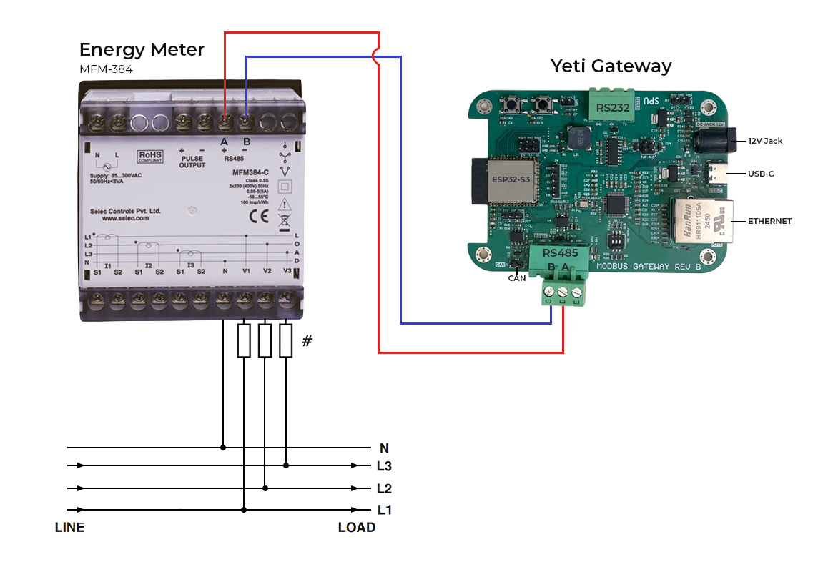
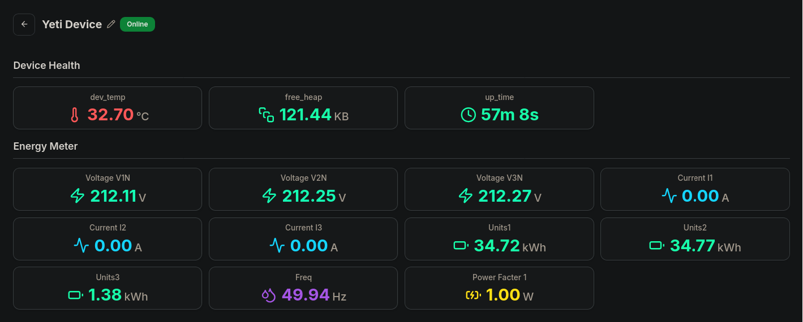

Device Setup
This document outlines the step-by-step process for setting up and configuring the Yeti Gateway, including network connection, Modbus configuration, and cloud integration.
Prerequisites¶
- A Yeti Gateway device
- The device's MAC address (Provided with the device)
- RS485 modbus supported device (This doc uses MFM-384 energy meter as example)
- Either Wifi or Ethernet for Network Access
- Cloud server credentials and certificate files (Provided with the device)
Part 1: Wiring Setup¶
This setup explains how to connect the Energy Meter to the Gateway. But This same A-to-A [ Red Wire ] and B-to-B [ Blue Wire ] wiring rule applies to any device (like other meters, PLCs, or sensors) that communicates using the RS485 Modbus standard.

- Find the RS485 ports:
- Look at the top section of the Energy Meter (MFM-384). You'll see two terminals labeled A and B.
- Look at the bottom section of the Yeti Gateway. You'll also see two terminals labeled A and B.
- Make the Two Connections:
- You need two wires. Do not mix up A and B!
- Use one wire to connect B on the Energy Meter to B on the Yeti Gateway.
- Use the second wire to connect A on the Energy Meter to A on the Yeti Gateway.
- Rule: B must connect to B, and A must connect to A.
- Check for Mistakes (The Polarity Check):
- Confirm that the A line is connected to A, and the B line is connected to B on both devices. Reversing these lines prevents proper communication.
- Power Up:
- Connect the 12 V power supply to the Yeti Gateway and power up the energy meter to begin operation.
Part 2: Network Setup¶
-
Option A: Ethernet Setup
- Connect a standard Ethernet cable from your network switch or router to the Ethernet port on the Yeti Gateway.
-
Option B: Wifi Setup
-
Connect to the Access Point
- Power on the Yeti Gateway.
- On your computer or mobile device, open your WiFi settings.
- Connect to the network named YETI-PRO-XXXX.
- replace XXXX with the last 4 digits of device's MAC address
- Captive Portal:
- Ideally, a login page will open automatically.
- If it does not, Go to your prefered web browser and go to
http://192.168.192.168.
-
Initial Login
- Log in to the local configuration page using the following credentials:
-
Configure WiFi
- Once logged in, navigate to the WiFi Settings page.
- Enter your local network's SSID and Password.
- IP Configuration:
- Dynamic IP: Ensure the Use DHCP box is checked.
- Static IP: Uncheck Use DHCP and manually enter the IP Address, Gateway, and Netmask.
- Click Save WiFi Settings.
- Click Restart to apply the changes.
-
Part 3: Accessing the Web Interface¶
- After the device restarts, it will be connected to your local network. You can now access it using its hostname rather than the direct access point.
- Connect your computer/phone to the same local network as the Yeti Gateway.
- Open a web browser and navigate to
http://yeti-pro-XXXX.local:- replace XXXX with the last 4 digits of device's MAC address
- Log in again using the same credentials:
Part 4: Modbus Configuration¶
-
Configure Connection Settings
- Navigate to the Connection tab.
-
Configure the RTU/TCP Settings.
- Note: These settings must match the settings of your connected Modbus devices.
-
Click Save RTU/TCP Settings.
-
Add Modbus Devices
- Navigate to the Modbus tab.
- Click on a device block (e.g., Device 1) to open its settings.
- Enter the Slave ID for the specific hardware you are connecting.
- Click Add Register to configure data points.
- Enter the register details:
- Parameter Name
- Unit
- Register Address
- Register count
- Data Type
- Scale
- Click Add Register to save the specific data point.
- Repeat for all necessary registers.
- Click Back to Slave List.
- Finally, click Save Modbus Settings on the main Modbus page.
Part 5: Cloud Configuration¶
-
Configure Server Settings
- Navigate to the Cloud tab.
- Enter the Server URL (e.g., mqtts://72.60.205.104).
- Enter the Port (e.g., 8883).
- Select the QoS Level.
-
Upload Certificates
- You will need to copy and paste the content of your certificate files into the respective fields:
- Root CA Certificate (PEM)
- Device Certificate (PEM)
- Device Private Key (PEM)
- You will need to copy and paste the content of your certificate files into the respective fields:
-
Save and Restart
- Click Save Cloud Settings.
- Click Restart in the top menu to apply the new cloud configuration.
Part 6: Data Visualization¶

- To Visualize the device is sending data:
- Open a browser and navigate to the application server:
https://www.garud.cloud - Log in with your user credentials.
- On the dashboard, locate your device in the Your Devices list.
- Click the device name to view the Live Telemetry Data.
- Open a browser and navigate to the application server: